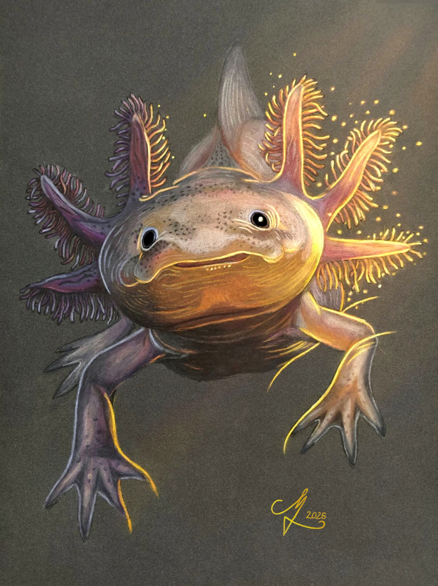
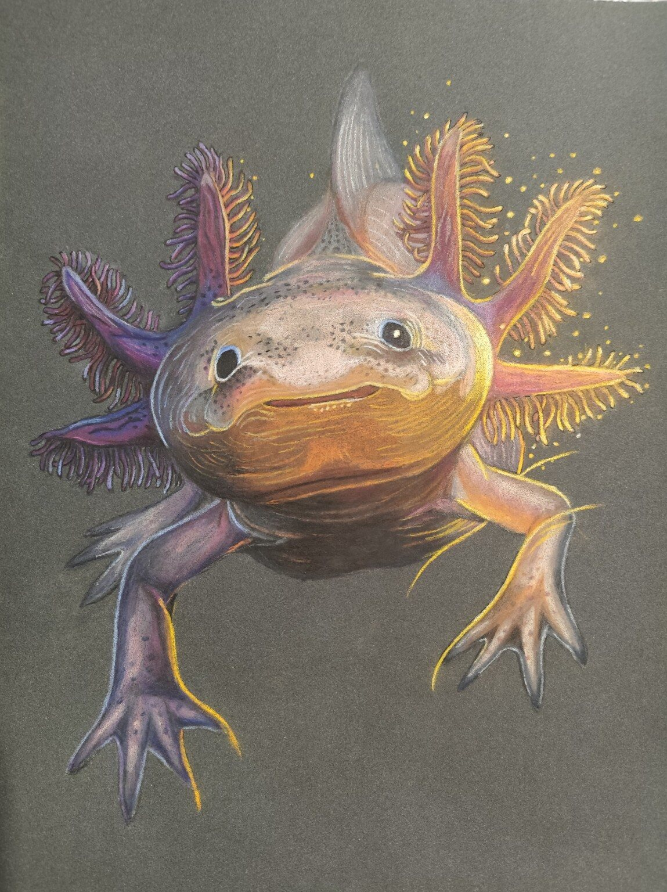
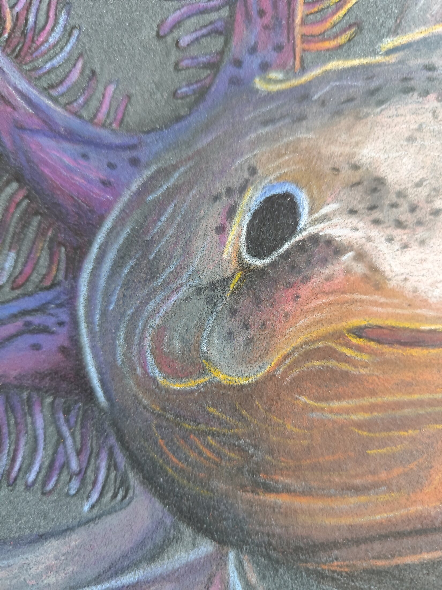
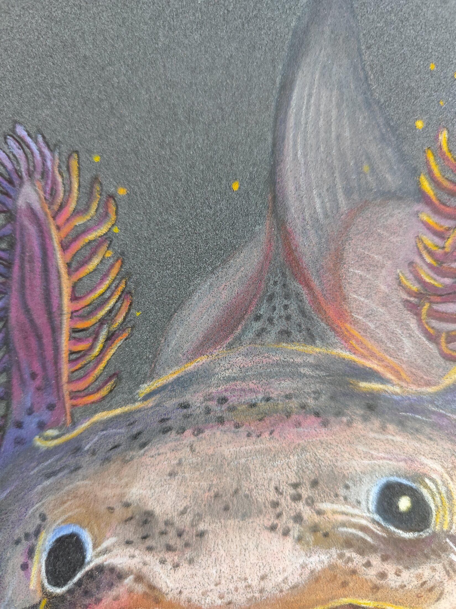
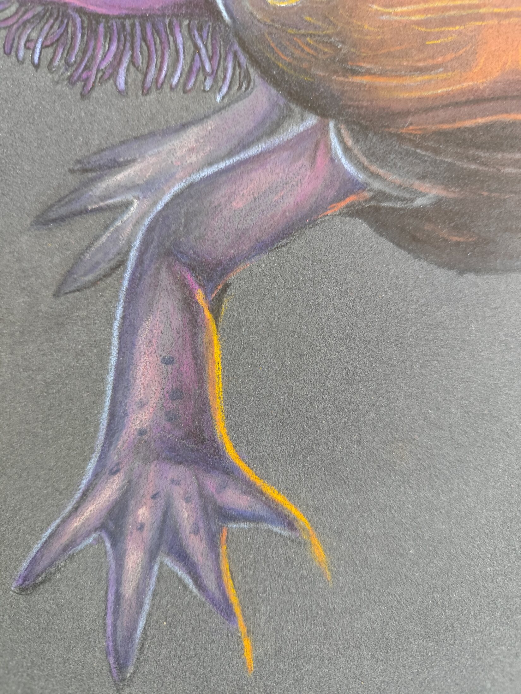
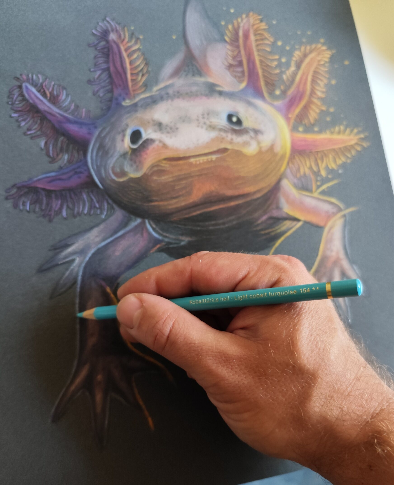
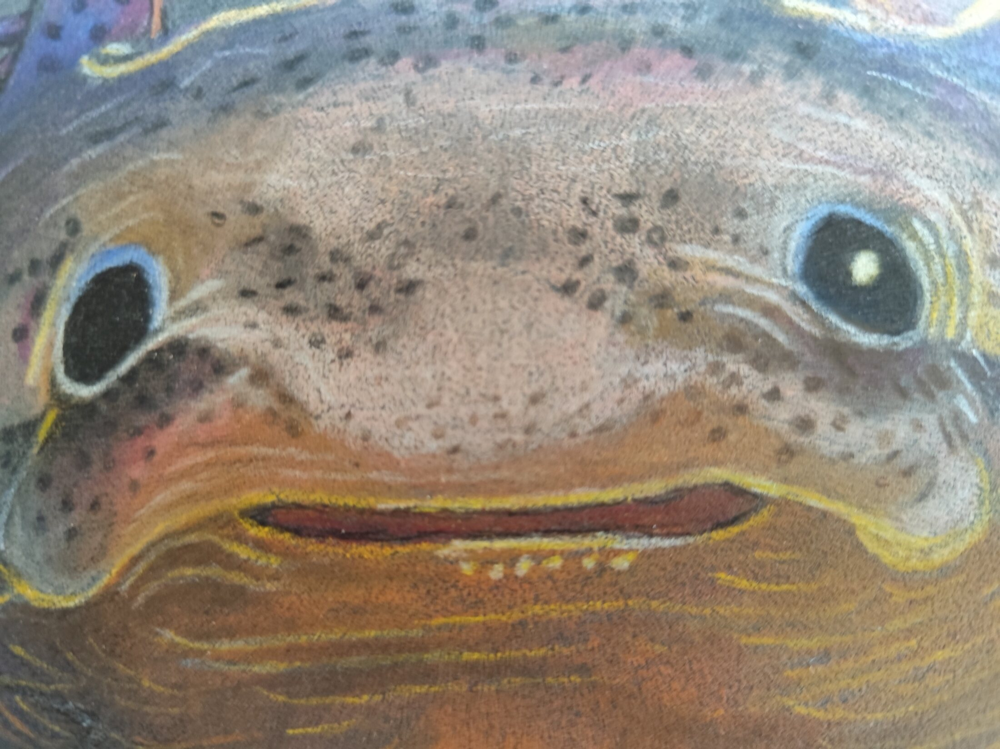

Axolotl
“There are wounds nature can heal—and losses even regeneration cannot reverse.”
Story
The axolotl remains juvenile throughout its life and possesses extraordinary regenerative abilities. Yet the wild species survives only in the damaged waterways of Xochimilco. This portrait contrasts biological renewal with ecological loss: an animal capable of regrowing parts of itself cannot restore a vanished habitat.
The digital light layer completes the concept without replacing the traditional drawing beneath it.
Történet
Az axolotl egész életében lárvaalakban marad, és rendkívüli regenerációs képességekkel rendelkezik. A vadon élő faj mégis csak Xochimilco leromlott vízrendszerében maradt fenn. A portré a biológiai megújulás és az ökológiai veszteség ellentétét mutatja meg.
Before digital light / Final

Details





Materials
2026 · Colored pencil and digital illumination · Clairefontaine Pastelmat · 30 × 40 cm